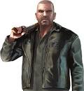

Title: "Niko Bellic: The Immigrant's Journey" Introduction: [Upbeat music playing] Narrator: In the bustling and diverse city of Liberty City, a tale of ambition, struggle, and redemption unfolds. Join us on a riveting journey as we delve into the life of Niko Bellic, an immigrant searching for the elusive American Dream amidst a world of crime and corruption. Segment 1: The Arrival Narrator: Our story begins with Niko Bellic's arrival in Liberty City, leaving behind a troubled past in war-torn Eastern Europe. As he steps off the boat, the city's neon lights and towering skyscrapers offer a glimmer of hope for a fresh start. Interview 1: Roman Bellic (Niko's cousin) Roman: Niko and I, we had dreams of making it big in this city. But it wasn't as easy as we thought. Segment 2: The Pursuit of the American Dream Narrator: Niko's journey takes an unexpected turn when he gets entangled in the criminal underworld. He finds himself pulled into a web of violence, betrayal, and conflicting loyalties. Interview 2: Little Jacob (Niko's friend and ally) Little Jacob: Niko was a man who could handle himself. He knew the streets, and he knew how to survive. Segment 3: Connections and Conflicts Narrator: Niko's path intersects with a host of memorable characters, from the charming but morally ambiguous Playboy X to the volatile and unpredictable Irish mobster, Packie McReary. Interview 3: Packie McReary Packie: Niko and I, we had our differences, but deep down, we understood each other. We were both searching for something more. Segment 4: Redemption and Reflection Narrator: As Niko carries out dangerous missions and faces life-altering choices, he begins to question the price he's paid for his pursuit of the American Dream. He grapples with his past, haunted by the memories that brought him to this point. Interview 4: Michelle (Niko's love interest) Michelle: Niko wanted to leave it all behind, but the past has a way of catching up with you. We all have our demons. Segment 5: The Legacy of Niko Bellic Narrator: Niko's journey ultimately leads him down a path of redemption, where he must confront his past and make choices that will shape his future. His story serves as a reminder of the harsh realities and moral complexities of the world we live in. Interview 5: Roman Bellic (Closing thoughts) Roman: Niko taught me that family isn't just about blood. It's about the choices we make and the bonds we forge along the way. Conclusion: Narrator: Niko Bellic's story is a testament to the resilience of the human spirit and the transformative power of second chances. In the ever-evolving landscape of Liberty City, his tale will forever be etched in the annals of gaming history. [Upbeat music fades out] Note: This documentary aims to capture the essence of Niko Bellic's character and his journey throughout Grand Theft Auto IV. It would combine interviews with key characters, gameplay footage, and narrative storytelling to create an engaging and informative experience for viewers.
Luis Lopez is a character in the Grand Theft Auto (GTA) series. He is the protagonist in the expansion pack called "The Ballad of Gay Tony," which is part of GTA IV. Here's a summary of Luis Lopez's journey in the game: Luis Lopez is a Dominican-American who works as a bodyguard and business associate for Anthony "Gay Tony" Prince, a nightclub owner in Liberty City. The game follows Luis as he navigates the high-end nightlife scene of Liberty City and gets involved in various criminal activities. Luis is a loyal employee to Tony, but he often finds himself caught up in the chaos and danger that comes with his line of work. Throughout the game, he becomes entangled with different criminal factions, including the Ancelotti crime family and the Korean mob. As the story progresses, Luis becomes increasingly embroiled in a series of high-stakes situations. He deals with drug dealers, organizes heists, and participates in intense shootouts. Along the way, he encounters several memorable characters, including Yusuf Amir, a real estate developer, and his sister, Bulgarin, a dangerous Russian mobster. Luis also faces personal challenges, including strained relationships with his family and conflicts with his childhood friend, Armando Torres, and his sister, Henrique Bardas. The story explores Luis's attempts to balance his loyalty to Tony, his own aspirations, and his desire to protect those he cares about. Throughout his journey, Luis experiences both the glamour and the darker side of Liberty City's nightlife. He confronts betrayal, violence, and the consequences of his own choices. The story of "The Ballad of Gay Tony" showcases the complexities of Luis Lopez's life as a criminal, offering players a unique perspective on the GTA IV universe. Note: Please keep in mind that this information is accurate up until September 2021, and there may have been subsequent updates or additions to the GTA series that I am unaware of.
-

Sure! Here's a fictional GTA journey featuring a character named Jhoony Klepitz: Title: GTA Journey: The Rise of Jhoony Klepitz Introduction: Welcome to the chaotic world of Grand Theft Auto, where the city streets are filled with crime and danger at every turn. In this tale, we follow the life of Jhoony Klepitz, a small-time criminal with big dreams. Jhoony is determined to make a name for himself in the criminal underworld of the fictional city of Los Robos. Will he become a feared kingpin or fall victim to his own ambition? Let's find out. Act 1: The Struggling Thug Jhoony Klepitz starts his journey as a low-level street thug, desperate to prove himself to the local crime syndicates. He undertakes various petty crimes and robberies, trying to earn the respect of the city's notorious gangsters. Along the way, he encounters other criminals, forms alliances, and learns the tricks of the trade. However, he realizes that to truly make a mark, he needs to aim higher. Act 2: Climbing the Criminal Ladder Jhoony sets his sights on joining a powerful cartel called The Vipers. He completes dangerous missions for them, showcasing his skills and loyalty. Through his determination and cunning, he gains the attention of the cartel's leader, Don Antonio. Jhoony's rise in the criminal underworld is marked by violence, betrayal, and moments of intense action as he battles rival gangs and corrupt law enforcement. Act 3: The Kingpin's Ascent Jhoony's reputation continues to grow, and he becomes a key figure within The Vipers. With the support of Don Antonio, he expands the cartel's operations, establishing drug trafficking routes, operating illegal gambling dens, and taking control of various criminal enterprises. Jhoony's thirst for power and wealth drives him to eliminate rivals, forge alliances, and assert his dominance over the city. Act 4: The Fall from Grace As Jhoony reaches the pinnacle of his criminal empire, his insatiable greed and ruthless tactics attract the attention of law enforcement. The city's police force launches a full-scale investigation into The Vipers, determined to bring Jhoony down. Betrayals from within the cartel start to surface, and Jhoony finds himself fighting a losing battle against both his enemies and his own ambitions. Act 5: Redemption or Destruction Jhoony faces a choice: continue down the path of destruction or seek redemption. He reflects on the consequences of his actions and realizes the toll his criminal empire has taken on those he cares about. In a final act of defiance, Jhoony turns against his former allies, cooperating with law enforcement to dismantle The Vipers and bring its leaders to justice. He sacrifices his criminal empire to save his loved ones and redeem himself. Conclusion: Jhoony Klepitz's journey in the criminal underworld of Los Robos is a tale of ambition, power, and the consequences of one's actions. Through his rise and fall, he discovers that the pursuit of wealth and dominance comes at a steep price. Whether Jhoony finds true redemption or becomes another casualty of the streets remains up to the player's choices, shaping the outcome of his GTA journey.
 https://www.youtube.com/@INHUMANE-GAMER
https://www.youtube.com/@INHUMANE-GAMER